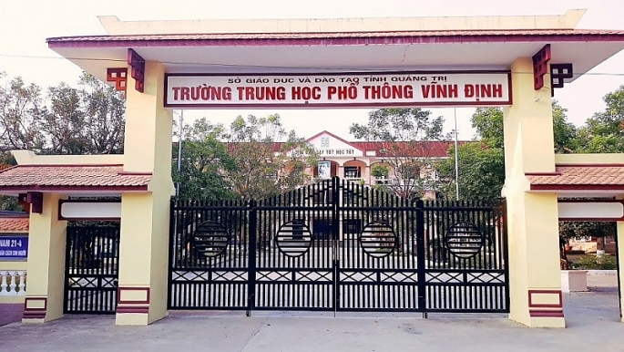

Ngày 12 tháng 9 năm 2003. Chủ tịch UBND tỉnh Quảng Trị ký quyết định số 1986/2002 QĐ - UE thành lập trường THPT
Vĩnh Định . Trường đóng lại xã Triệu Trung bên dòng sông Vĩnh Đinh hien hoa trên vùng quê giàu truyền thống hiếu
học . Trường ra đời đáp ứng nhu cầu và nguyện vọng học tập của các em học sinh và nhân cần các xã phía đông của
huyện Triệu Phong và một số xã phía bác huyện Hải Lăng . Cho đến nay đã được 10 năm tuy mới chỉ là bước khói đầu
nhưng 10 năm qua Trường THPT Vĩnh Định đã từng bước phát triển vùng chắc trên tất cả các mặt.
Về số lượng: Năm
học 2003 2004 , trường đón nhân khóa học Với 260 em học sinh lớp 10 và chia thành 4 lớp.Các năm học tiếp theo
2004 2005 và 2005 2006 do chưa có cơ sở chính thức cơ sở vật chất thì còn nghèo nên mới năm trường chỉ nhận vào
4 lớp 10 với số lượng 180 học sinh.Đến nay, năm học 2012-2013 trường đã có gần 1300 học sinh với sự lớp ( mỗi
khỏi 10 lớp )
Về đội ngũ: Năm học đầu tiên trường có 14 CBGV biên chế trong đó BGH B CB hành chính 1 và 11 GV
đứng lớp , được tổ chức thành 3 tổ: Tế Tự nhiên do thấy Đoàn Đang Hải giáo viên Toán làm tổ trưởng tố xã hội do
thầy giáo Nguyễn Thanh Bình giáo viên Văn làm tổ trưởng và tổ Hành chính do thay giao Phạm Chí Tam Ph làm bộ
trưởng Sau 10 năm , trường đã có 80 CBGV đạt trình đó từ Đại học trở lên ( trong đó 8 6V Cao học ) , BGH có 3
người, 69 giáo viền 2 bản bố hành chính, 5 nhân viên hợp đồng
